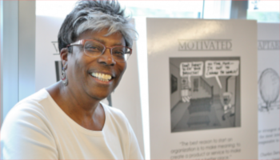
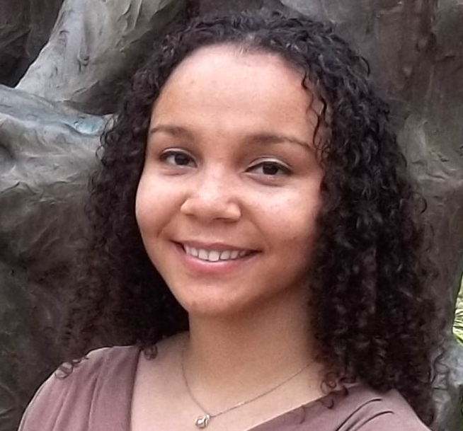

STARS Instructors
Jason Williams

Jason Williams is Assistant Director, Inclusion and Research Readiness at the Cold Spring Harbor Laboratory DNA Learning Center where he develops national biology education programs. Jason leads education, outreach, and training for CyVerse (US national cyberinfrastructure for the life sciences) and has trained thousands of students, researchers and educators in bioinformatics, data science, and molecular biology. Jason’s focus has been developing bioinformatics in undergraduate education and career-spanning learning for biologists. Jason is founder of LifeSciTrainers.org – a global effort to promote community of practice among professionals who develop short-format training for life scientists. Jason is advisory to cyberinfrastructure, bioinformatics, and education projects and initiatives in the US, UK, Europe, and Australia. He is also a teacher at the Yeshiva University High School for Girls.
Carol Carter

Dr. Carter joined the Stony Brook University (SBU) faculty as a tenure-track Assistant Professor in the Department of Molecular Genetics & Microbiology, School of Medicine, after graduating from the City College of New York (Phi Beta Kappa), earning her PhD at Yale U and completing postdoctoral studies in virus replication and protein biochemistry at the Roche Institute of Molecular Biology. At SBU, she advanced through the ranks to Professor and is an Adjunct Professor in the Department of Physiology & Biophysics. Dr. Carter leads a federally funded basic research program focused on the pathogenesis of AIDS and other viral-induced diseases and has served on the editorial boards of journals in her field and federal, state and private advisory committees. Her research centers on cellular protein trafficking mechanisms necessary for production of virus particles and how they might be targeted for anti-viral drug design. Aspects of her work have been exhibited in the Museum of Science & Technology (Chicago IL, 2000) and translated into issued or pending patent/licenses. Dr. Carter was a featured speaker at the “Women in Science” workshop sponsored by the International Union of Biochemistry and Molecular Biology (Japan, 2006), is a member of several SBU Graduate and Medical Sciences Training Programs in Infectious Diseases, Cancer, and Genetics and has participated in teaching of undergraduate, graduate, medical, and dental students. She has been the recipient of the “SBU Exceptional Service to Undergraduate Education” award, was recognized by the office of the SBU President for her service in initiatives promoted by the Center for Inclusive Education, received the 2016 Suffolk County Public Service award and, for her translational work, the 2017 Long Island Innovator award. For her research achievements, she was elected into the National Academy of Sciences in 2024. She gratefully acknowledges the enthusiastic support and encouragement of the CSHL Director David Micklos and Assistant Director Jason Williams, without whose talents, dedication and commitment this opportunity could not have been developed.
Brittany Johnson

Brittany is an educator and Manager of Diversity and Research Readiness at the DNA Learning Center. She graduated with a Bachelor of Arts in Biology from Fisk University, and a Master of Biological Medical Sciences from Mississippi College. Brittany’s involvement with the DNALC began when she attended school trips and participated in a Summer DNA Program creating antibiotic resistant genes held at Central Islip High School. She was grateful for the teachers who made sure she and others had the opportunity and exposure to this style of learning. Later, while volunteering in the then Central Islip School District (CISD) Mulligan Science Center a DNALC Educator came to do a lab, eventually leading her to pursue an opportunity to start a career with the DNALC team. The DNA Learning Center sparked an interest she never forgot, and as an educator, it is her aspiration to encourage critical thinking, while creating an environment and an excitement for learning.
Joeli Marrero

My life story follows a trajectory like that of my mitochondrial DNA: a circle with lots of twists and turns. My story begins in Puerto Rico where I grew up climbing trees and exploring lush nature. After spending my childhood immersed in muddy puddles and endless forest trails, I naturally went to the University of Puerto Rico, Cayey to study biology. Up in the misty mountains of Cayey, I had the luck to be selected to participate in many undergraduate research programs; these programs introduced me to the world of research, which stretches beyond my warm and cozy island.
I traveled the world pursuing my scientific training and, along the way, I completed my Ph.D. in molecular biology and microbiology and a post-doc in immunology. On this journey, I have acquired many amazing friends from all corners of the world. Scientific training does not have an endpoint, as it moves with the frontier of knowledge, and like Universe, it is in constant expansion. Conversely, scientific training never ceases, which I discovered when I left the workforce to raise my children. During this phase, I briefly taught college undergraduates, wrote medical documents for a big pharma, and worked in a library. However, during this phase I primarily did one thing: raise my children from sun-up to sun-down. Being a full-time, stay-at-home mom is the hardest job I have ever done, but I have to say that looking back it has been the most important job that I have ever done. I can honestly say that I did not plan on taking that important job, but it was my heart that led me to it. After all my kids started school full-time, I took the leap to return to the workforce. And with that leap, I continued to follow my heart on this circle, which is full of twist and turns. This journey took me back to the place I love, which is a place of free science exploration and learning. Alas, luck struck again, and I landed a job at the DNA Learning Center to teach hands-on science to students.
I am honored to join the DNA Learning Center team to teach and promote DNA science literacy. You may ask: “Why study DNA?” I would answer that question with another question: “Would you like to learn how to read the book of life?” If your answer is “Yes,” then my dear reader, hold my hand and allow me to take you inside a cell and find a copy of the most ancient written story, a lengthy chronicle written with only four characters: AGTC. This chronicle retells the story of where you came from, while it also contains the recipe to make every single part of you; and perhaps, your DNA book may contain some yet unknown secrets about you. And maybe, your story also has twist and turns just like DNA; and like a circle, it takes you back to the place you love. I hope to meet you there.
Ashley Paynter

As a child, I was always extremely curious. My first exposure to biology was in the 9th grade and I immediately fell in love. I then applied to a NSF Science Research Mentoring program at the American Museum of Natural History, where I studied marine venomous snail toxins. I continued to be mentored at the museum throughout my college career, during summers as part of the NSF Research Experience for Undergraduates program where I investigated the genetic underlyings of a contagious cancer in bivalves. In college at Binghamton University, I worked in a Lyme disease research laboratory and campaigned as an environmental rights activist to ban fracking in the Southern Tier of New York.
In 2017 I moved across the country to Seattle to pursue my Ph.D. in biology at University of Washington. During my time at UW, I studied early detection of cancer and comparative oncology. I investigated precancerous mutations in dogs to better understand somatic mutagenesis and aging. I also became an advocate for health equity and diversity and inclusion in STEM. My goal is to make science more accessible, fun, and approachable for people of all backgrounds and ages.
Advisors and Supporters
Thank you to the various supporters who have made it possible for us to make this idea a reality. Their support enabled us to refine our ideas for the camp, recruit students, and develop the curriculum. We also want to acknowledge others possibly not listed here who contributed in other ways including teachers and advisors who helped spread the word, administrators who helped distribute flyers, and anyone else who helped behind the scenes.
David Micklos
David Micklos is the Founder and Executive Director of the Cold Spring Harbor DNA Learning Center. His support has made it possible for us to support the STARS program. He originally conceived of the idea of holding a dedicated DNALC camp that would serve to support underrepresented students in STEM and embraced the opportunity to collaborate with Professor Carter and her colleagues at Stony Brook University, who were seeking a setting for such an initiative.
Lloyd Trotman
Professor Cancer Center Deputy Director of Education and Diversity.
Beatrice Toliver
Chairperson, NAACP Long Island ACT-SO (Afro-Academic, Cultural, Technological and Scientific Olympics) Program.
Jennie Williams
Professor, Stony Brook University School of Medicine; Director, Inducer (Increasing Diversity in Undergraduate Cancer Biology Education and Research) Program.
Kamazima Lwiza
Professor, Stony Brook University School of Marine & Atmospheric Sciences.